Role
Senior Manager of Design
How I led a team to solve for customer, product, and organizational problems to help SMB marketers onboard to CMS Hub in one day, not three months.
HubSpot is a suite of Hubs, each built for a different persona, each sold in Starter, Professional, and Enterprise tiers, except CMS Hub. This was our opportunity.
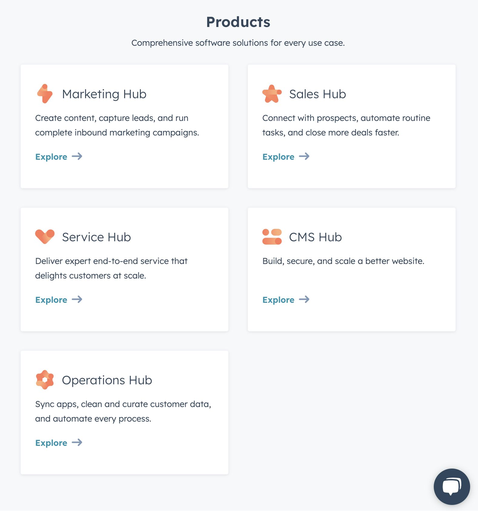
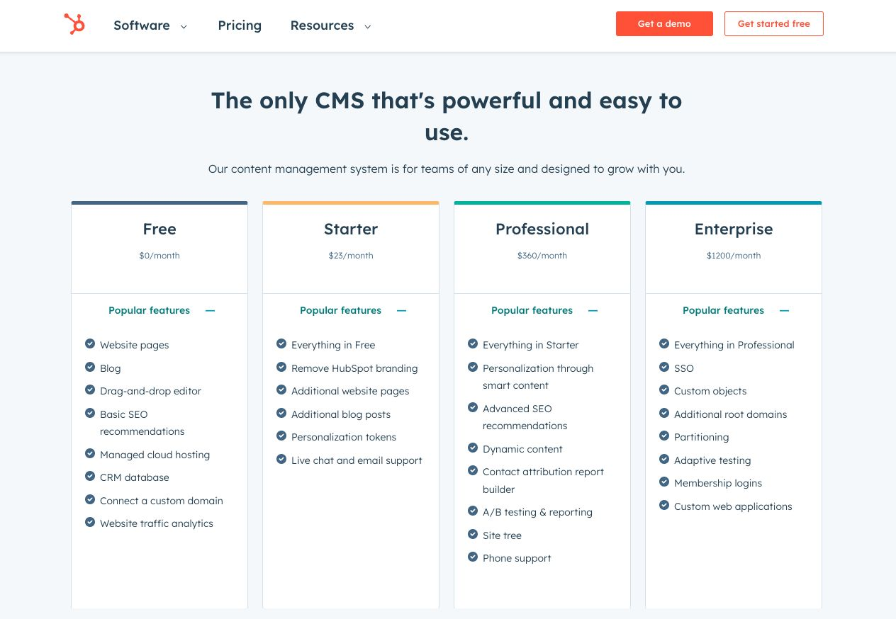
A small-business marketer juggling content, sales tooling, and a website she'd love to update without a developer. Everything downstream stems from one goal.
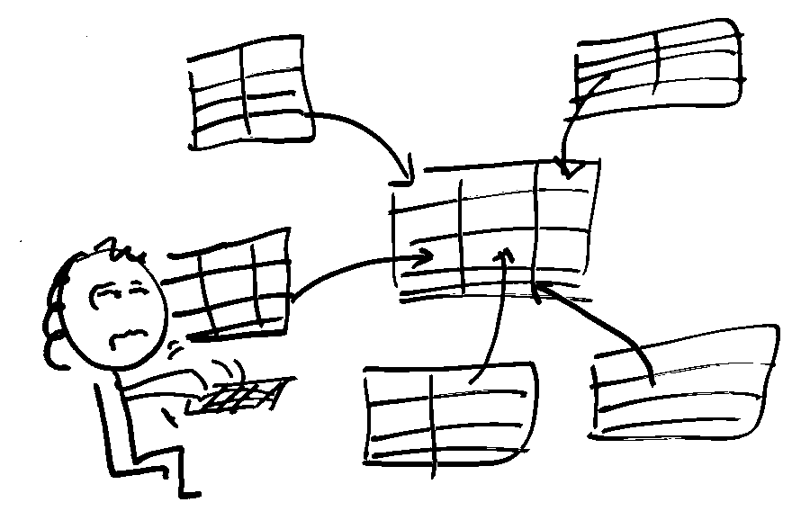
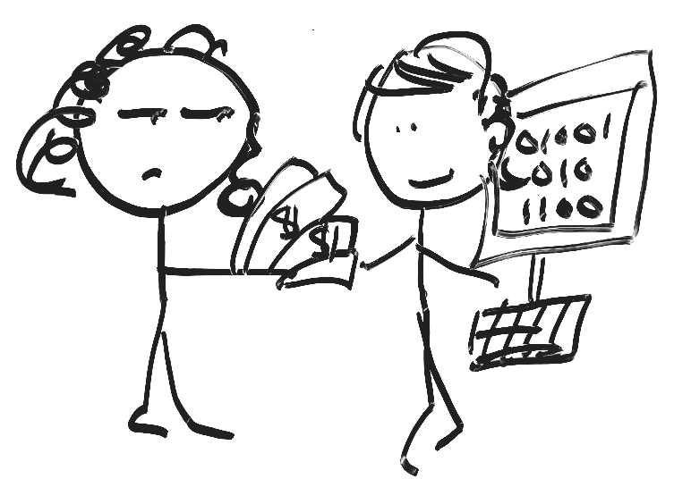
Let's move Meerah to HubSpot.
Meerah needs a site she can build, publish, and grow on her own. The product wasn't built for her, and neither, yet, was the internal HubSpot team.
Meerah would have many points of contact and pay additional fees, taking precious time to find help.
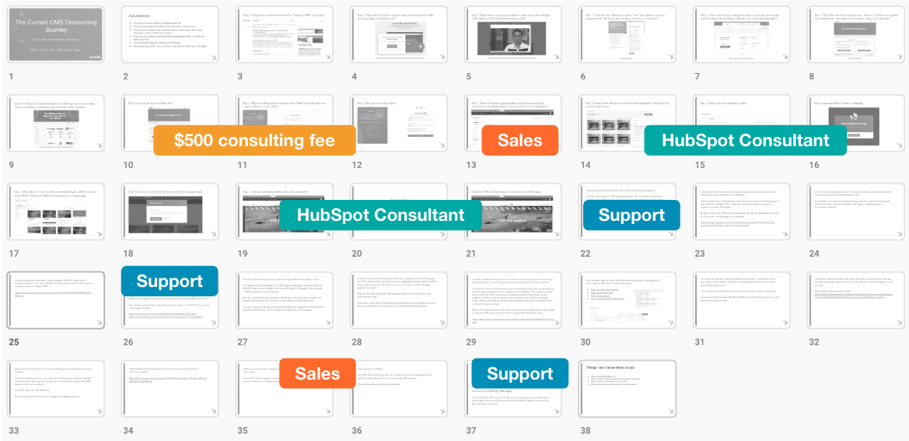
To change a post, Meerah needed to understand HubL, layouts, and partials. That's not a content tool. It's a codebase.
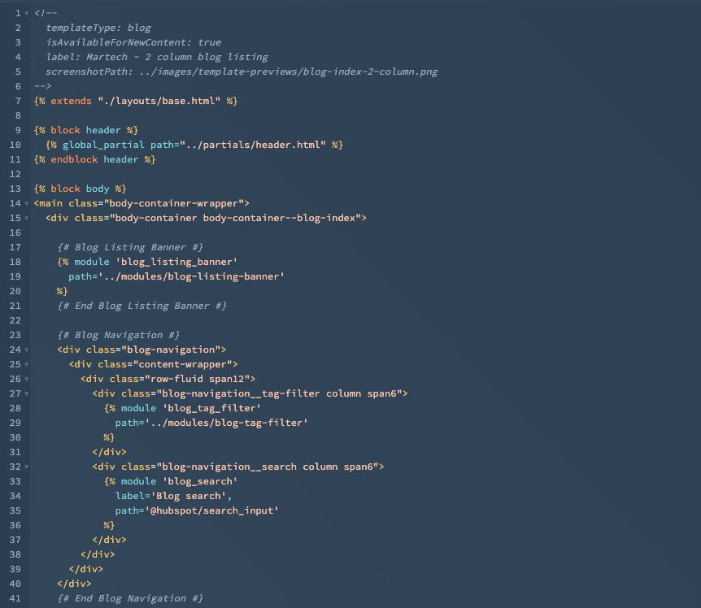
All confirmed through research.
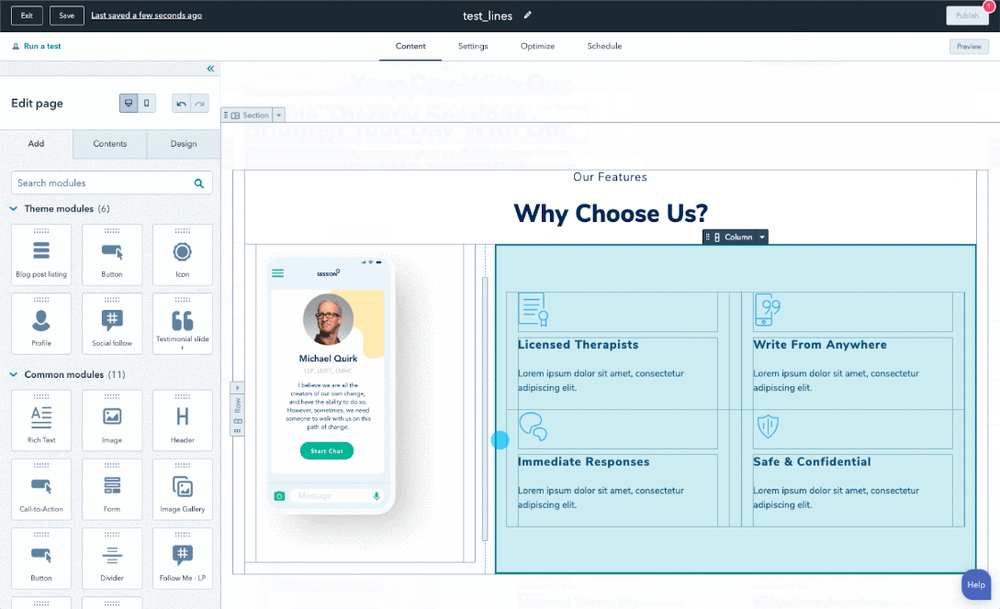
HubSpot couldn't agree on what “good” meant. I wrote a problem doc and partnered with the incredible Rosie Osire (UXR) to create Grading Research, a triangulated, A–F read on whether customers could actually get the value they paid for. It rolled out company-wide.
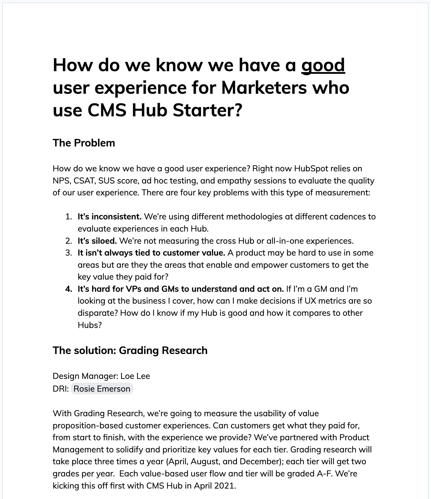
Make one-pagers and design strategy artifacts standard to define and influence how we make product.
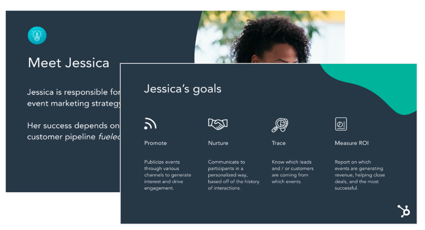
Have regular career discussions grounded in role expectations and a documented growth framework.
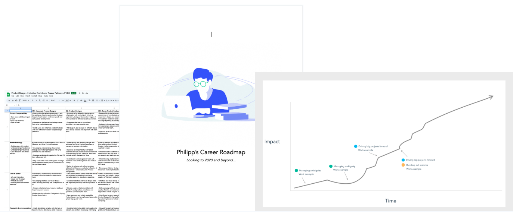
Enable Meerah to build on her own, with a guided start, a marketer-friendly blog, and an editor she could actually use. Then I changed how the org works, so good decisions keep happening after I step back.
We first bet on a website importer, then killed it; we couldn't import unstructured data. The opposite bet won: enable Meerah to build on her own, and three moves turned a three-month, multi-hand-off setup into a guided first day. A curated marketplace of themes and templates gives her a designed starting point instead of a blank page; conversational onboarding asks a few plain-language questions and tailors the setup to her industry; and guided theme and style settings let her match her brand, with no developer and no ticket.
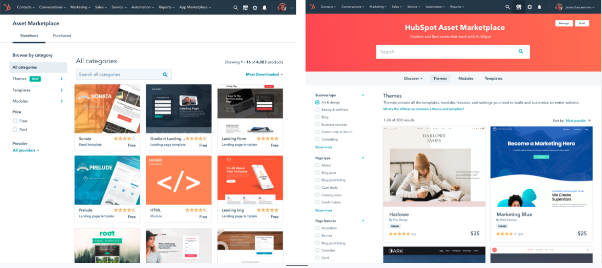
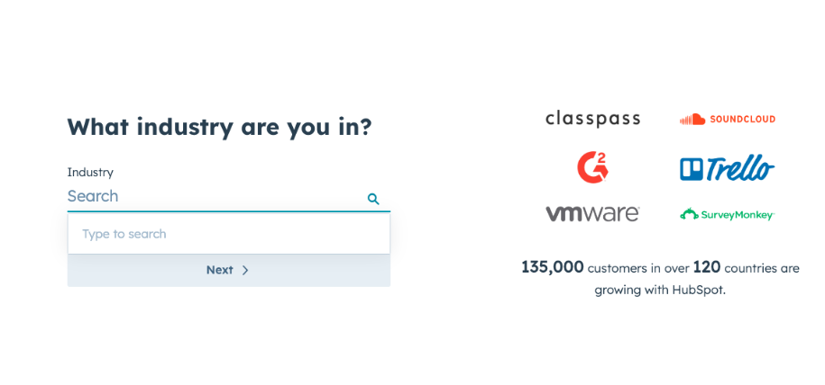
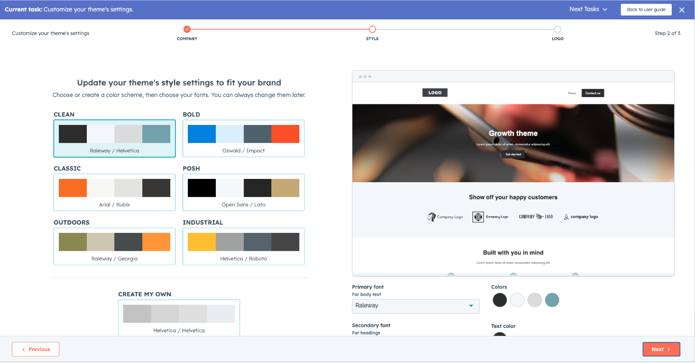
Drag-and-drop blog modules and a live preview replaced HubL templates. Research moved the grade from F to A−.
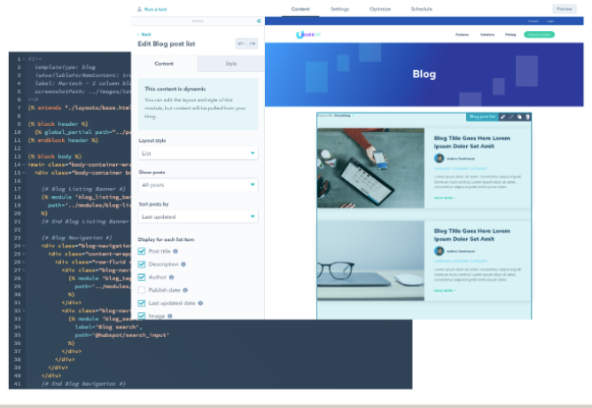
Inline editing and content blocks let marketers change copy, images, and CTAs directly on the page.
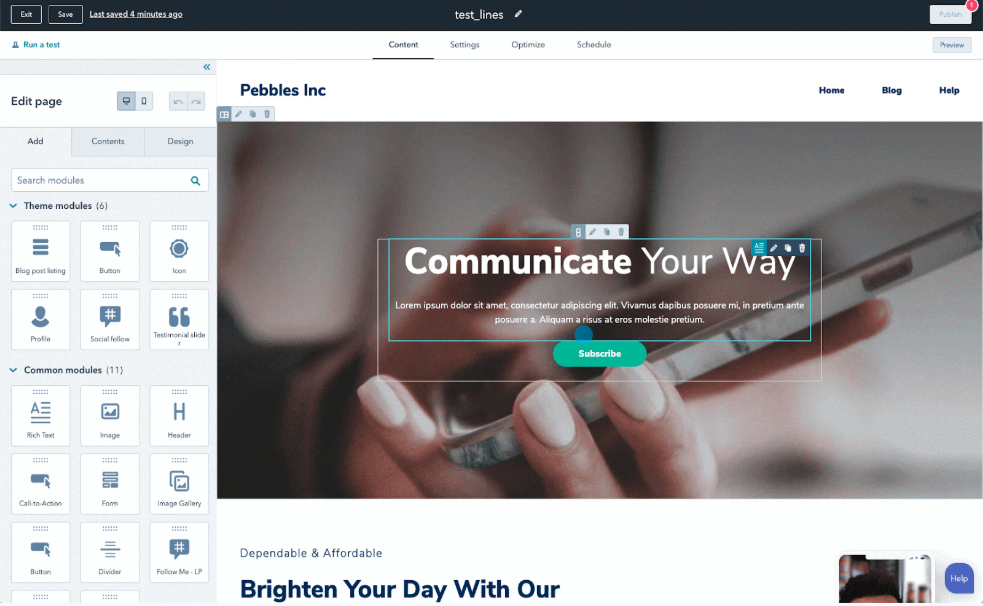
Five promotions, HubSpot's most diverse design team, and internal talent trying to transfer in. The team nominated me for the 2021 Great Manager Award, one of 25 chosen from 550 nominees.
Teams are the work. Build them right and the product follows.
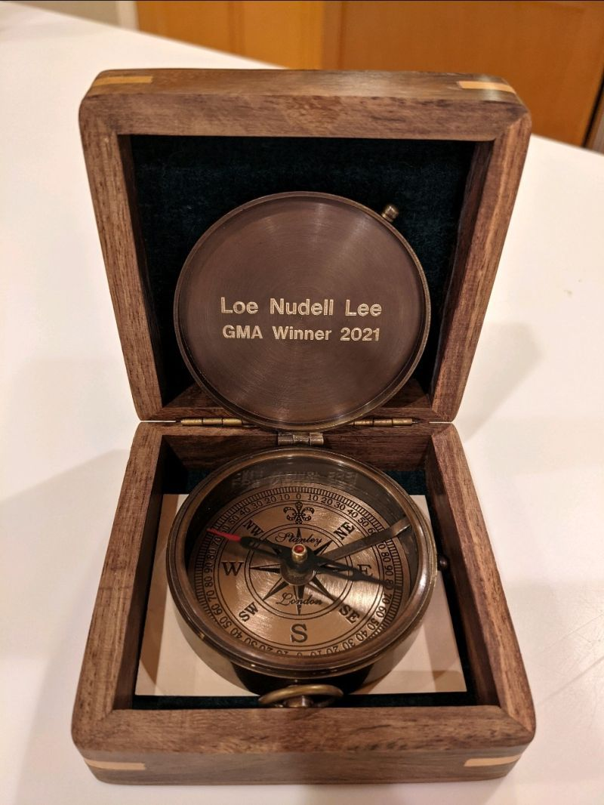